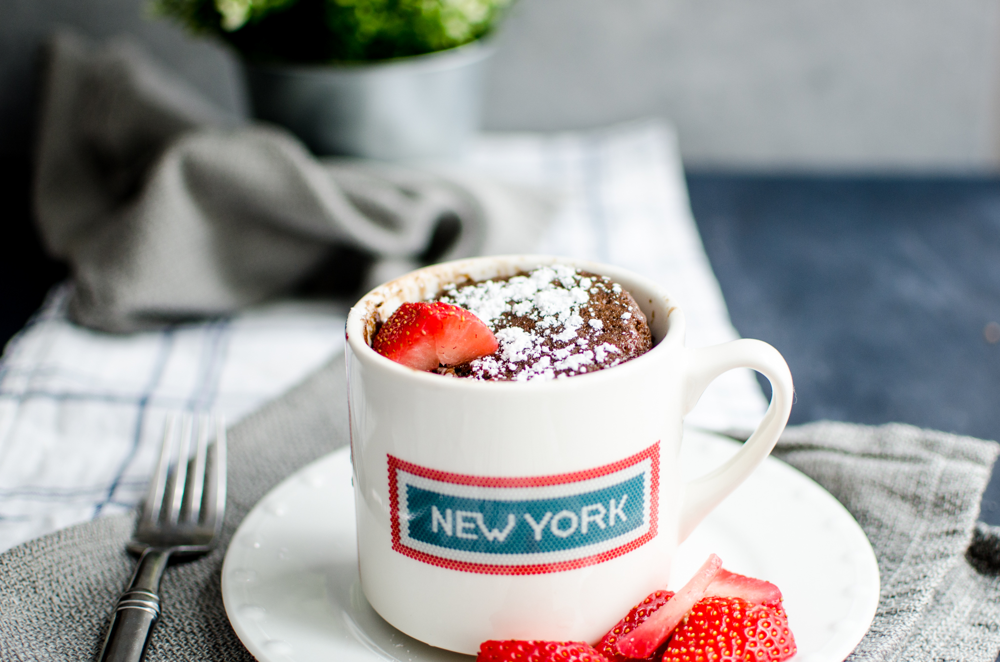

Decadent Chocolate Lava Mug Cake

Description
It’s a cake made in a mug! A microwave mug cake is great because you can make a single serving for when that chocolate craving hits you. Instead of making an entire chocolate cake that will sit and tempt you all week, you can make a little mug of heaven to satisfy your craving.
Ingredients
- 1/4 cup flour
- 1/4 cup granulated sugar
- 2 tablespoons cocoa powder
- 1/2 tsp baking powder
- Pinch salt
- 3 tablespoons unsalted butter, melted
- 3 tablespoons milk
- 1 egg
- 1/2 teaspoon vanilla extract
- 1 oz semi-sweet chocolate chips
- 1 tablespoon water
Steps
- Gather all of your ingredients. Melt your butter in the microwave.
- Whisk together with a fork, the flour, sugar, cocoa powder, baking powder and salt until well combined in mug.
- Add in the melted butter, milk, egg and vanilla. Whisk well to combine, making sure to mix in the flour mixture in the bottom.
- Place the semi-sweet chocolate chips in the center of the mug. Drizzle the tablespoon of water right on top of the batter.
- Cook in microwave for 1-2 minutes or until the cake rises to the top, the edges look set. The center will looks slighty wet and shiny but not raw, and sticks slightly to the finger when touched.
Return Home